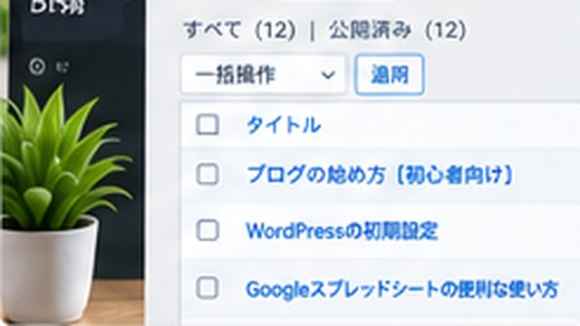

Web全般
ChatGPTでCSVを作ってGoogleスプレッドシートへ取り込む方法
ChatGPTでCSVを作ってGoogleスプレッドシートへ取り込む方法について、初心者向けに具体的な手順・例・注意点を交えて解説します。

ChatGPTでCSVを作ってGoogleスプレッドシートへ取り込む方法について、初心者向けに具体的な手順・例・注意点を交えて解説します。
ChatGPTでプログラミングするときの注意点について、初心者向けに具体的な手順・例・注意点を交えて解説します。

ChatGPTの記事がAIっぽい原因は？自然な文章へ直す方法について、初心者向けに具体的な手順・例・注意点を交えて解説します。

ChatGPTでExcel・スプレッドシート作業を効率化する方法について、初心者向けに具体的な手順・例・注意点を交えて解説します。

ChatGPTのプロンプトとは？書き方のコツと例文を初心者向けに解説について、初心者向けに具体的な手順・例・注意点を交えて解説します。
ChatGPTの回答が思い通りにならない原因は？指示の直し方を解説について、初心者向けに具体的な手順・例・注意点を交えて解説します。

ChatGPTのプロジェクトとは？使い方を初心者向けに解説について、初心者向けに具体的な手順・例・注意点を交えて解説します。
ChatGPTに画面を見せながらWebサイト設定を進めるコツについて、初心者向けに具体的な手順・例・注意点を交えて解説します。

ChatGPTとは？何ができる？初心者向けにわかりやすく解説について、初心者向けに具体的な手順・例・注意点を交えて解説します。
ChatGPTはどんなことに使える？初心者向け活用例まとめについて、初心者向けに具体的な手順・例・注意点を交えて解説します。

GitHubやGA4など、次に押す場所が分からないときにスクリーンショットを使ってChatGPTへ質問する方法と注意点を解説します。

ChatGPTと相談しながらデザイン、HTML、記事生成、GitHub Pages公開まで進めた実体験と、AIに任せやすい作業を紹介します。


テーマ決めから構成、事実確認、Markdown化、GitHub Pagesへの公開まで、ワカルカモで実際に使った流れを紹介します。